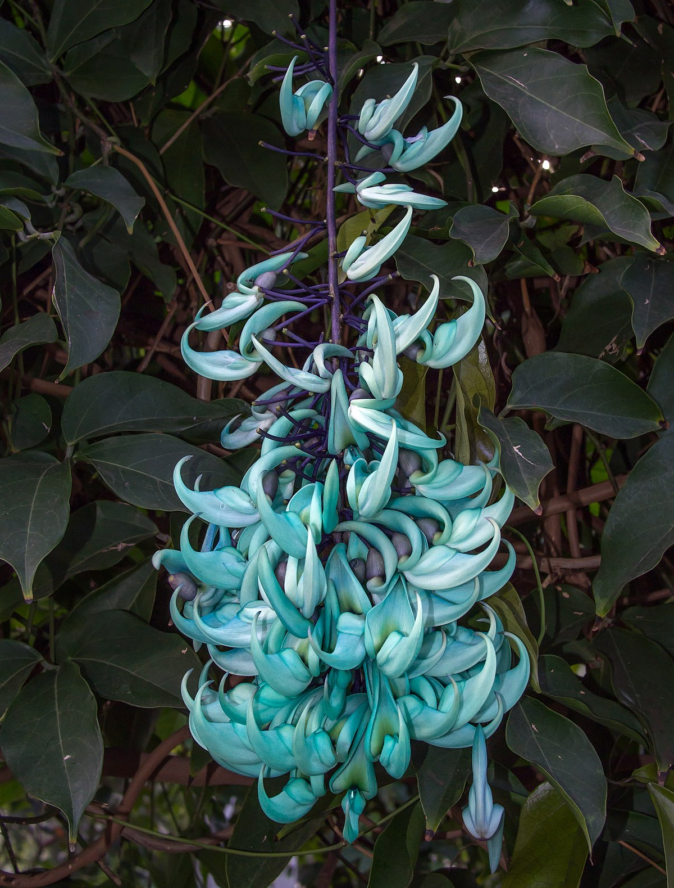

Jade Vine

Strongylodon macrobotrys, commonly known as jade vine, emerald vine[2] or turquoise jade vine,[3] is a species of leguminous perennial liana (woody vine) endemic to the tropical forests of the Philippines, with stems that can reach up to 18 m in length.[4] Its local name is tayabak.[5] A member of the Fabaceae (the pea and bean family), it is closely related to beans such as kidney bean and runner bean.[4] Strongylodon macrobotrys is pollinated by bats. Strongylodon macrobotrys was discovered in 1841 on the jungled slopes of Mount Makiling, on the Philippines’ Luzon Island, by members of the United States Exploring Expedition led by U.S. Navy Lt. Charles Wilkes. One can only imagine how startling that apparition must have been, but we are left only with the description of the Harvard-based botanist Asa Gray, who had locked horns with Wilkes previously and elected not to join the voyage. As part of the task of describing the thousands of plants collected by the multi-ship expedition, which ranged from Honolulu to Antarctica and involved several violent skirmishes with the natives (Wilkes was court-martialed at the end of the expedition, but acquitted), Gray named the vine in 1854. Its species epithet macrobotrys means “long grape cluster”, from the Greek makros "long" and botrys "bunch of grapes",[6] referring to the fruit; the genus name derives from strongylos "round", and odous "tooth",[7] referring to the rounded teeth of the calyx. A member of the bean family, Jade vine is bat-pollinated in the wild, thus it must be hand-pollinated in greenhouses to bear its fruit, which can grow to be melon-sized. This has been done over the years at the Royal Botanic Gardens at Kew Gardens in England, where seed conservation is an ongoing focus, especially in the face of loss of rainforest habitat